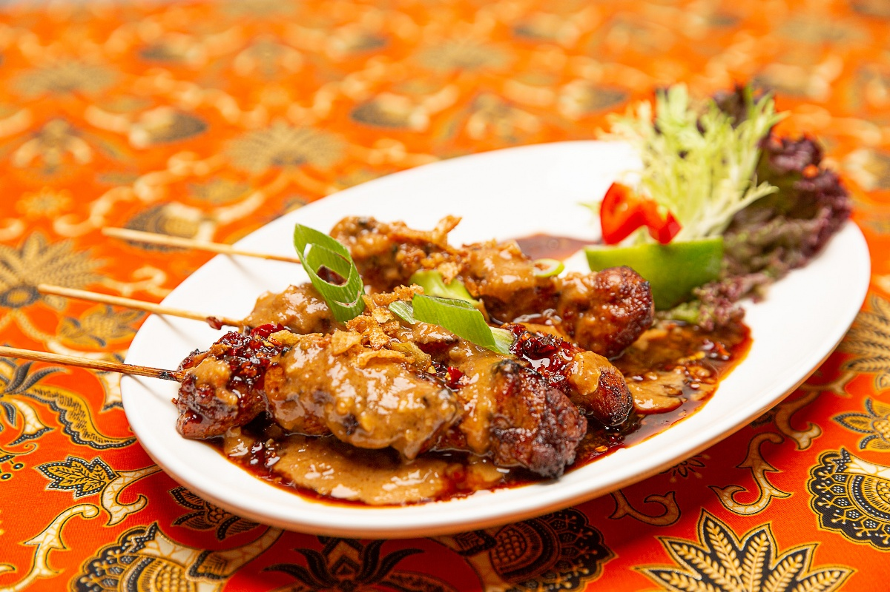
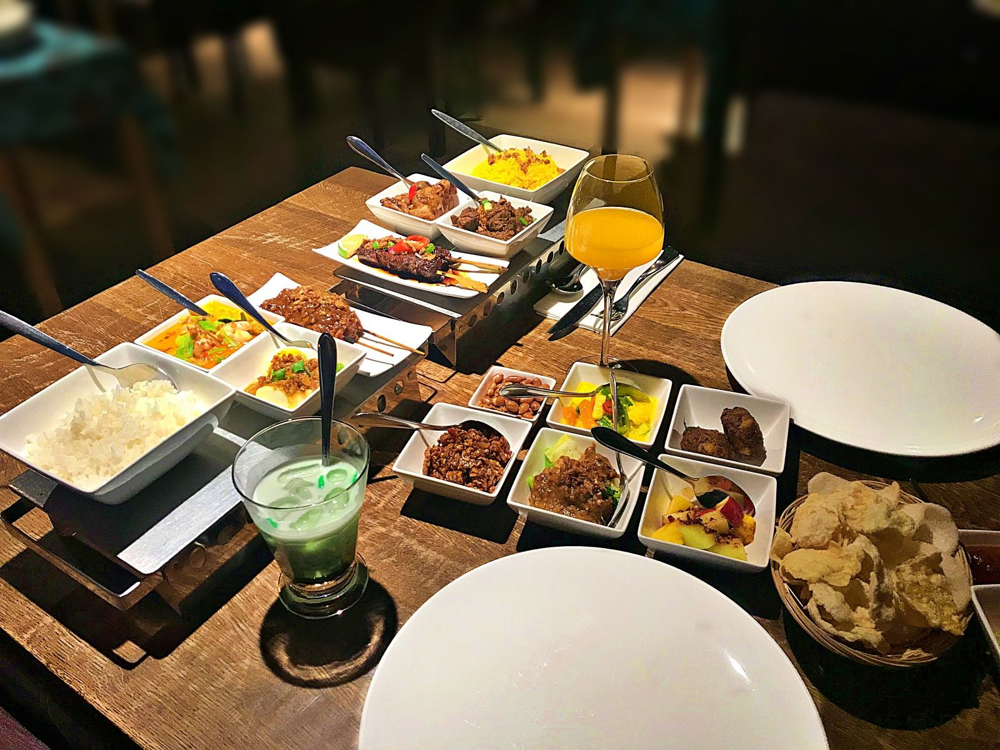
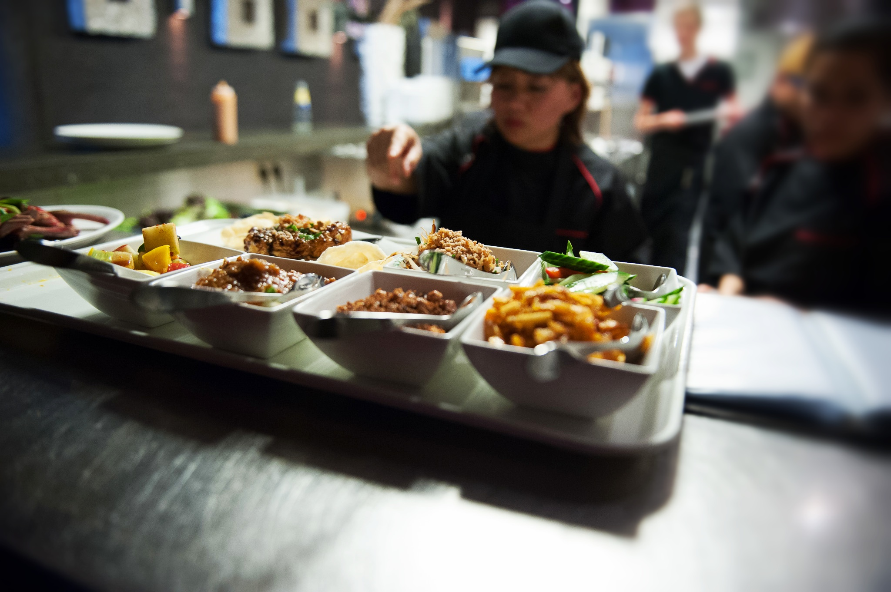
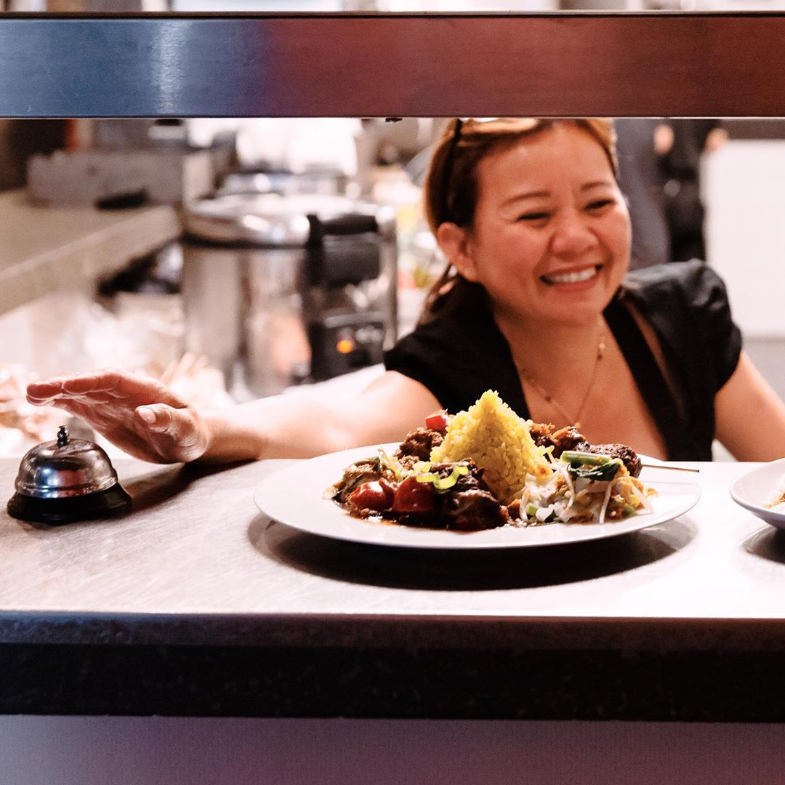

Selamat datang
Kraton Rosbeijer
Indonesisch restaurant in Leusden. Chefkok Tien kookt met de kruiden en specerijen van Midden-Java, van saté tot een complete rijsttafel.
- Wo t/m zo, 16:00 – 23:00
- Gratis parkeren
- 3 minuten van het AFAS Theater

Kerst bij Kraton
- Kerstavond restaurant normaal geopend, geen afhaal
- 1e kerstdag alleen afhaal: 3-gangen kerstmenu, ophalen tussen 13:00 en 16:00. Het kerstmenu wordt binnenkort gepubliceerd. Restaurant gesloten.
- 2e kerstdag gesloten
Rijsttafel van de maand
Van 2 t/m 30 november serveren we rijsttafel Beringin, met nasi kuning (gele rijst) en witte rijst. In het restaurant € 43,00 p.p., om af te halen € 39,95 p.p.
Bekijk de rijsttafelsAfhalen
Online afhalen is tijdelijk niet beschikbaar. Bestel telefonisch via 033 887 1111.
Nieuw: rijsttafel Kecil voor de kleine eter. Cadeaubonnen koopt u in het restaurant.

Een paleis aan de Hamersveldseweg
Kraton betekent paleis. Hier eet u in een ambiance met wortels in het traditionele landleven op Java, midden in Leusden. Met de rijsttafel proeft u in één avond de hele keuken, of u kiest zelf uw gerechten van de kaart.
Kraton is TheFork Top Host: een van de best beoordeelde restaurants op TheFork, op basis van ruim 1.600 gastenrecensies. Kraton staat ook in de INSIDER-selectie van TheFork.
Op een mooie dag kunt u op ons terras even de sfeer proeven, met een drankje en wat hapjes.
Theater 3-gangen keuzemenu
41,50 p.p.
Kraton ligt op 3 minuten fietsen of rijden van het AFAS Theater. Voor of na de voorstelling kiest u uit verschillende voor-, hoofd- en nagerechten. U kunt ook van onze gewone dinerkaart bestellen.
Geef bij het reserveren, online of telefonisch, door dat u op tijd in het AFAS Theater wilt zijn. Dan zorgen wij dat u op tijd kunt vertrekken. Gratis parkeren aan de voor- en zijkant van het restaurant.
Voorgerecht
- Lemper kleefrijstrolletje met een vulling van kruidige kip
- Soto Javaanse kippensoep met taugé, ei en glasvermicelli
- Loempia sajoer vegetarische loempia
Hoofdgerecht
- Rendang rundvlees in pittige kokosmelksaus
- Ayam bakar Kraton op midden-Javaanse wijze gegrilde kippendijfilet
- Ikan tjolo tjolo gebakken kabeljauwfilet met kruidige zoete sojasaus
- Gado gado geblancheerde gemengde groenten met pindasaus
- Tahoe telor tahoe-omelet op een bedje van taugé, afgeblust met sojasaus
- Daging smoor Djawa gesmoord rundvlees in zoete sojasaus
- Gulai domba gesmoorde lamsbout in kruidige kokosmelksaus
Met witte rijst en nasi goreng.
Nagerecht
- Es tjendol Javaans kokosmelkdrankje met puddingslierten en Javaanse suikersiroop
- Es spekkoek spekkoek met vanille-ijs en slagroom
- Es nona manis 2 bolletjes vanille-ijs met chocoladesaus
Afhalen
Afhalen kan van woensdag t/m zondag tussen 16:00 en 20:00. We spreken samen een afhaaltijd af, zo houden we het rustig in het restaurant. Komt het tijdstip niet goed uit? U warmt de gerechten thuis heel makkelijk zelf op.
Online afhalen is tijdelijk niet beschikbaar. Bestel telefonisch via 033 887 1111. Sinds 1 juli 2023 is een bijdrage voor meeneembakjes verplicht.
Bestel: 033 887 1111
Voor- en nagerechten
- Saté ayam12,75
3 stokjes saté van kippendijfilet
- Saté babi13,75
3 stokjes saté van varkenshaas
- Saté kambing15,75
3 stokjes saté van geitenhaas
- Pangsit goreng (3 stuks)10,75
Gebakken bladerdeeg met een vulling van gehakt en garnalen, op een bedje van verse salade
- Loempia sajoer (2 stuks)9,75
Vegetarische loempia
- Kue dadar5,75
Groene pannenkoek met een vulling van kokos en Javaanse suiker
- Es tjendol8,50
Javaans kokosmelkdrankje met puddingslierten en Javaanse suikersiroop
- Spekkoek7,50
Een kwart stuk spekkoek (original)
- Soto10,95
Javaanse kippensoep met glasvermicelli, taugé en ei
Rijsttafels om mee te nemen
Rijsttafel Kraton44,00 p.p.
Geserveerd met witte rijst en nasi goreng, kroepoek en emping. Voorgerecht soto optioneel (7,50 extra).
- Sambal goreng daging pittig rundvlees met een vleugje kaneel
- Babi ketjap varkensvlees in zoete sojasaus
- Ajam besengeh kippendijfilet in milde kokosmelksaus
- Ikan boemboe Bali gebakken pangafilet in pittige balisaus
- Oedang mentega gamba's in kruidige botersojasaus
- Sajoer lodeh gemengde groenten in romige kokosmelk
- Sajoer buncis snijboontjes in milde kokosmelk
- Gado-gado geblancheerde gemengde groenten met pindasaus
- Roedjak manis gemengd fruit met zoet pittige Javaanse suiker
- Saté ayam saté van kippendijfilet
- Saté babi saté van varkenshaas
- Telor koening ei in mild pittige kokosmelksaus
- Pisang goreng gebakken banaan
- Kentang blado frietjes in zoet pittige glazuur
- Perkedel daging Indische gehaktbal
- Atjar ketimoen zoetzure komkommer
- Seroendeng droog gebakken kokos met pinda's
Rijsttafel Beringin t/m 30 november39,95 p.p.
Geserveerd met nasi kuning (gele rijst) en witte rijst, kroepoek en emping.
- Daging empal kelem zoetig gesmoord rundvlees
- Ayam pedas pittig gekruide kippendijfilet
- Telor koening ei in mild pittige kokosmelksaus
- Saté kambing saté van geitenhaas
- Saté babi saté van varkenshaas
- Sajoer tjampoer gemengde groenten in pittige kokosmelk
- Pisang goreng gebakken banaan
- Roedjak manis gemengd fruit met zoet pittige Javaanse suiker
- Kentang blado frietjes in zoet pittige glazuur
- Atjar ketimoen zoetzure komkommer
- Seroendeng droog gebakken kokos met pinda's
- Gado-gado geblancheerde gemengde groenten met pindasaus
Rijsttafel Pasar Kembang vegetarisch37,50 p.p.
Geserveerd met witte rijst en nasi goreng, kroepoek en emping.
- Telor koening ei in mild pittige gele kokosmelksaus
- Sajoer buncis snijboontjes in milde kokosmelksaus
- Sajoer lodeh gemengde groenten in romige kokosmelk
- Oerapan geblancheerde gemengde groenten met mild pittige kokos
- Gado-gado geblancheerde gemengde groenten met pindasaus
- Tahoe ketoprak tahoe en taugé met kruidige sojasaus
- Roedjak manis gemengd fruit met zoet pittige Javaanse suiker
- Perkedel jagung maiskoek
- Pisang goreng gebakken banaan
- Atjar ketimoen zoetzure komkommers
- Kentang blado frietjes in zoet pittige glazuur
- Kering tempé droog gebakken tempé in zoet pittige glazuur
- Seroendeng droog gebakken kokos met pinda's
Menu's voor 1 persoon
In een handige verpakking, zodat u in één keer van uw maaltijd geniet. Allemaal met nasi goreng, kroepoek en emping.
Nasi Rakyat28,00 p.p.
Nasi goreng met:
- Rendang gesmoord rundvlees in pittige kokossaus
- Ajam bakar Kraton op midden-Javaanse wijze gegrilde kippendijfilet (met vel)
- Telor koening ei in mild pittige gele kokosmelksaus
- Sajoer buncis snijboontjes in milde kokosmelksaus
- Perkedel daging Indische gehaktbal
- Saté ayam saté van kippendijfilet
Menu saté ayam istimewa23,00 p.p.
Nasi goreng met:
- Saté ayam 3 stokjes saté van kippendijfilet
- Gado-gado geblancheerde gemengde groenten met pindasaus
- Kentang blado frietjes in zoet pittige glazuur
Menu saté babi istimewa24,00 p.p.
Nasi goreng met:
- Saté babi 3 stokjes saté van varkenshaas
- Gado-gado geblancheerde gemengde groenten met pindasaus
- Kentang blado frietjes in zoet pittige glazuur
Menu saté kambing istimewa27,00 p.p.
Nasi goreng met:
- Saté kambing 3 stokjes saté van geitenhaas
- Gado-gado geblancheerde gemengde groenten met pindasaus
- Kentang blado frietjes in zoet pittige glazuur
Extra
- Extra nasi goreng8,00
- Extra bami goreng8,00
- Bintang (Indonesisch bier)5,75
- Zelfgemaakte sambal (mild pittig)6,00
- Zelfgemaakte sambal pittig7,00
- Zakje kroepoek4,50
Catering
Vanaf zo'n 20 personen verzorgen we catering bij uw feest of andere gelegenheid. Bel ons om de mogelijkheden te bespreken.
Besloten feesten en vergaderen
In onze aparte ruimte voor zo'n 20 tot 30 personen houdt u een besloten feest, familiereünie, private dining, vergadering of teambuildsessie. Met airconditioning en wifi. Ook een condoleance is mogelijk.
Lunch voor groepen
Met een groep lunchen in de middag kan ook. Vraag gerust naar de mogelijkheden.
Dinerbon
Een dinerbon met een bedrag naar keuze koopt u in het restaurant, om cadeau te doen.

Chefkok Tien
Tien Loedyo Hartono is geboren in Semarang, aan de noordkust van Java. Toen ze een jaar of acht was, begon haar moeder een eetkraampje dat uitgroeide tot een restaurant. Tien proefde en rook mee, sneed groenten en maalde kruiden fijn in de tjobek. De geur van kruiden en specerijen zit sinds die tijd in mijn bloed.
Ze studeerde in Yogyakarta en woonde daar op kamers achter de Kraton, het paleis van de sultan. Op haar negentiende kwam ze naar Nederland. Na een baan in een Indonesisch afhaalcentrum begon ze een eigen zaak, Toko Semarang in Amersfoort. Later kookte ze in Spandershoeve, het enige Indonesische restaurant met een Michelinster, werkte ze als zelfstandig kok bij restaurant Blauw in Utrecht en startte ze haar cateringbedrijf Ibu Tien.
Haar grote droom was een eigen restaurant, net als haar moeder op Java. Sinds 19 juni 2013 staat ze in haar eigen keuken, met naast de gewone ingrediënten ook liefde, passie, traditie en jarenlange ervaring.
Werken bij Kraton
We zoeken medewerkers voor de bediening en de keuken, fulltime of parttime. Je krijgt leuke collega's en een fijne werkomgeving. Kraton betekent paleis: je komt dus in een paleis te werken.
Bel 033 887 1111 of mail naar info@kratonrosbeijer.nl.
- Bediening m/v fulltime of parttime
- Keukenbediening / kok m/v fulltime of parttime
- Medewerker spoelkeuken m/v parttime
Openingstijden
| Maandag en dinsdag | gesloten |
|---|---|
| Woensdag t/m zondag | 16:00 – 23:00 |
| Keuken sluit | 21:30 |
| Afhalen, wo t/m zo | 16:00 – 20:00 |
Bereikbaarheid
Vlakbij de A28, Amersfoort en het AFAS Theater. U parkeert gratis aan de voorkant, aan de zijkant en aan de overkant van de Hamersveldseweg. Alles bezet? Dan parkeert u ook gratis bij De Mulderij, vlak bij Kraton.